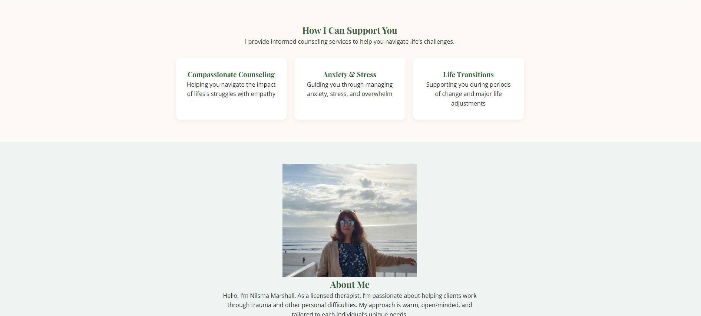

Centered Mind Counseling
A warm, welcoming redesign for a trauma-focused private therapy practice.

A warm, welcoming redesign for a trauma-focused private therapy practice.
Centered Mind Counseling is my mother’s private practice specializing in trauma therapy. Her old website lacked warmth, clarity, and modern structure. My goal was to create a site that reflects her personality — kind, grounded, and compassionate — while making it easy for potential clients to find information and reach out.
The original website was outdated, text-heavy, and difficult to navigate. It lacked emotional warmth and failed to communicate her story, her approach, or the safe environment she offers clients.
I created a color palette using greens and neutrals, combined with serif and sans-serif typography to balance professionalism with warmth.
The final design is soft, comforting, and easy to navigate — a true reflection of her practice.